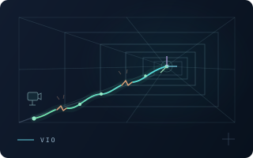
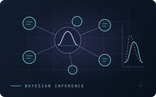
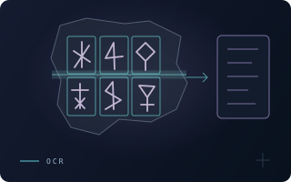

Hi, I’m Xiang.你好，我是李响。
Building perception that brings robots closer to the real world.让机器人更好地感知、理解与探索真实世界。
Xiang Li is a 2025-cohort Master’s student in Artificial Intelligence at the School of Computer Science and Technology, Dalian University of Technology, advised by Prof. Yan Zhuang. He received the B.Eng. degree in digital media technology from Dalian University of Technology, Dalian, China, in 2025, and is currently pursuing the M.S. degree in artificial intelligence at the Intelligent Robot Laboratory. His current research interests include Embodied AI, Embodied Agent, Robotic Perception, and Computer Vision.
李响，大连理工大学计算机科学与技术学院人工智能专业2025级硕士研究生，师从庄严教授。曾于2025年在大连理工大学获得数字媒体技术工学学士学位，目前正在该校智能机器人实验室攻读人工智能硕士学位。当前的研究方向包括具身智能、具身Agent、机器人感知和计算机视觉。
Striving for comprehensive development to become a more valuable individual.力求全面发展，让自己成为一个更有价值的人。
Xiang Li, a member of the Communist Party of China, is a 2025-cohort master’s student specializing in Artificial Intelligence at the School of Computer Science and Technology, Dalian University of Technology. During his time at the university, he has participated in over a dozen student-led initiatives, received more than 30 scholarships and honorary titles, won over 40 awards in various competitions, and contributed nearly 300 hours to volunteer service.李响，中共党员，大连理工大学计算机科学与技术学院人工智能专业2025级硕士研究生，在校期间累计参与十余项学生工作，获得三十余项奖学金及荣誉称号，各类竞赛活动获奖四十余项，志愿服务时长近300小时。
Publications论文成果
StereoAdapter-2: Globally Structure-Consistent Underwater Stereo Depth Estimation
IJRR · Under review审稿中
Benchmarking Visual-Inertial Odometry in Subterranean Environments Under Sensor Degradation, Miscalibration, and Dynamic Occlusion
ICARCV 2026 · Accepted已接收GS-UVCE: Gaussian Splatting-Driven Unsupervised Visual Consistency Enhancement for Underwater 3D Scene Reconstruction
ICRA 2026 · Published已发表
Bayesian Latent Safety-Trait Inference for LLMs and Agentic Systems
SSPP 2026 · Project paper项目论文
Text Detection and Character Recognition of Oracle Original Topographies Based on PP-YOLOE+
ICSECE 2024 · Published已发表Education教育经历
School of Computer Science and Technology计算机科学与技术学院
Master’s in Artificial Intelligence (Rank: 1 / 197)硕士 · 人工智能（排名：1 / 197）
School of Software and International School of Information Science and Engineering软件学院、国际信息与软件学院
Bachelor’s in Digital Media Technology (Rank: 11 / 120)学士 · 数字媒体技术（排名：11 / 120）
Research Experience科研经历
Jul 20262026.07
SMILES-2026 Summer School · ParticipantSMILES-2026 暑期学校 · 学员
Jan – Mar 20262026.01 – 2026.03
Research Assistant · Robot Perception科研助理 · 机器人感知
Oct 2025 – May 20262025.10 – 2026.05
Research Assistant · Underwater 3D Vision科研助理 · 水下三维视觉
Industry Experience实习经历
Jun – Sep 20262026.06 – 2026.09
Embodied AI Algorithm Engineer具身智能算法工程师
Apr – Jun 20262026.04 – 2026.06
Mar 2025 – Apr 20262025.03 – 2026.04
Academic Services学术任职
Skills专业技能
Programming Language编程语言
C/C++ · Python · R · SQL
Framework编程框架
PyTorch · PaddlePaddle
Tools工具
Isaac Sim · MuJoCo · ROS · Qt · Git · Docker
Languages语言
Mandarin · English · Japanese · Cantonese普通话 · 英语 · 日语 · 粤语
Student Leadership学生工作任职
Graduate Studies研究生阶段
- Presidium Member, Graduate Student Union, Dalian University of Technology校研究生会主席团成员2026.08–Present2026.08–至今
- Staff Member, Research Department, Graduate Student Union, Dalian University of Technology校研究生会科研部工作人员2025.09–2026.072025.09–2026.07
- Presidium Member, Graduate Student Union, School of Computer Science and Technology院研究生会主席团成员2025.09–2026.082025.09–2026.08
- Class Monitor班长2025.09–Present2025.09–至今
- Organization Committee Member, Party Branch党支部组织委员2026.04–Present2026.04–至今
Undergraduate Studies本科阶段
- University Student Surveyor校学生调研员2024.03–2025.042024.03–2025.04
- President, Psychological Association, Development Zone Campus校区阳光心理健康协会会长2023.08–2024.072023.08–2024.07
- Minister, Psychology Department, School of Software and International School of Information Science and Engineering院学生会心理部部长2023.08–2024.072023.08–2024.07
- Grade Study Representative级队学习委员2022.09–2025.062022.09–2025.06
- Discipline Committee Member, Youth League Branch团支部纪律委员2023.09–2025.062023.09–2025.06
- Dormitory Leader寝室长2021.09–2025.062021.09–2025.06
Honors & Distinctions荣誉称号
Graduate Studies研究生阶段
- 2025–2026DUT Outstanding Graduate Student大连理工大学优秀研究生
- 2025–2026DUT Innovation and Entrepreneurship Award大连理工大学创新创业奖
- 2025–2026DUT Social Practice Award大连理工大学社会实践奖
- 2025–2026DUT Organization and Service Award大连理工大学组织服务奖
- 2025–2026DUT Athletic Excellence Award大连理工大学体育竞技奖
- 2025–2026DUT Culture and Arts Award大连理工大学文化艺术奖
- 2025DUT Outstanding Communist Youth League Member大连理工大学校优秀共青团员
Undergraduate Studies本科阶段
- 2025Dalian Outstanding Graduate (Class of 2025)大连市2025届优秀毕业生
- 2025DUT Outstanding Graduate (Class of 2025)大连理工大学2025届优秀毕业生
- 2023–2024DUT Outstanding Student Model (ten university-wide recipients annually)大连理工大学优秀学生标兵（全校每年仅十人）
- 2023DUT Outstanding Communist Youth League Member大连理工大学校优秀共青团员
- 2023Outstanding Communist Youth League Cadre, School of Software and International School of Information Science and Engineering软件学院、国际信息与软件学院优秀共青团干部
- 2022–2023DUT Outstanding All-Round Student大连理工大学校优秀三好学生
- 2022–2023DUT Outstanding Young Volunteer大连理工大学校优秀青年志愿者
- 2022DUT Outstanding Communist Youth League Member大连理工大学校优秀共青团员
Scholarships奖学金
Graduate Studies研究生阶段
- 2026–2027First-Class Graduate Academic Scholarship学业奖学金（一等）
- 2025–2026National Scholarship for Master's Students硕士研究生国家奖学金
- 2025–2026First-Class Graduate Academic Scholarship学业奖学金（一等）
Undergraduate Studies本科阶段
- 2023–2024Qu Bochuan Scholarship (ten university-wide recipients annually)屈伯川奖学金（全校每年仅十人）
- 2023–2024National Scholarship for Undergraduate Students本科生国家奖学金
- 2023–2024Civic Conduct Scholarship精神文明奖学金
- 2023–2024Student Service Scholarship社会工作奖学金
- 2023–2024Cultural and Sports Activities Scholarship文体活动奖学金
- 2023–2024Social Practice Scholarship社会实践奖学金
- 2023–2024Technological Innovation Scholarship科技创新奖学金
- 2023–2024First-Class Academic Excellence Scholarship学习优秀奖学金（一等）
- 2022–2023Civic Conduct Scholarship精神文明奖学金
- 2022–2023Student Service Scholarship社会工作奖学金
- 2022–2023Cultural and Sports Activities Scholarship文体活动奖学金
- 2022–2023Second-Class Academic Excellence Scholarship学习优秀奖学金（二等）
Competitions竞赛经历
National Awards国家级奖项
- 14th APMCM Asia-Pacific Mathematical Contest in Modeling — National Second Prize第十四届APMCM亚太地区大学生数学建模竞赛国家二等奖
- 14th National College Mathematics Competition — National Third Prize第十四届全国大学生数学竞赛国家三等奖
- 2024 China Collegiate Computing Contest, AIGC Innovation Competition — National Third Prize2024年中国高校计算机大赛-AIGC创新赛国家三等奖
- 13th National College Student Digital Media Technology Competition (2026) — National Third Prize2026年第十三届全国大学生数字媒体科技大赛国家三等奖
- 21st May Day Mathematical Modeling Competition — National Third Prize第二十一届五一数学建模竞赛国家三等奖
Provincial & Regional Awards省级与区域级奖项
- 2026 Mathematical Modeling League of the Three Northeastern Provinces — Provincial First Prize2026年东北三省数学建模联赛省一等奖
- 2024 Mathematical Modeling League of the Three Northeastern Provinces — Provincial First Prize2024年东北三省数学建模联赛省一等奖
- 14th MathorCup Mathematical Application Challenge — Northeast Region Third Prize第十四届MathorCup数学应用挑战赛东北赛区三等奖
University-Level Awards校级奖项
- Dalian University of Technology Mathematical Modeling Competition — University-Level First Prize大连理工大学数学建模竞赛校一等奖
- 4th Dalian University of Technology Artificial Intelligence Challenge — University-Level First Prize大连理工大学第四届人工智能挑战赛校一等奖
- 17th National Computer Design Competition, Big Data Track — University-Level First Prize第十七届全国计算机设计大赛大数据赛道校一等奖
- 17th National Computer Design Competition, Software Applications and Development Track — University-Level Second Prize第十七届全国计算机设计大赛软件应用与开发赛道校二等奖
- 12th National College Student Digital Media Technology Competition (2024) — University-Level Third Prize2024年第十二届全国大学生数字媒体科技大赛校三等奖
- 1st Dalian University of Technology “AI+” Interdisciplinary Innovation and Application Competition, Intelligent Vehicles Track — University-Level Third Prize大连理工大学首届“人工智能+”交叉学科创新应用大赛智能车辆赛道校三等奖
Contact联系方式
Ideas are better shared.让想法相遇。
Let’s connect on embodied intelligence, robot perception, and 3D vision.欢迎交流具身智能、机器人感知与三维视觉相关研究。
Let’s connect on university life and shared interests.欢迎交流学生工作、校园生活与共同关注的话题。